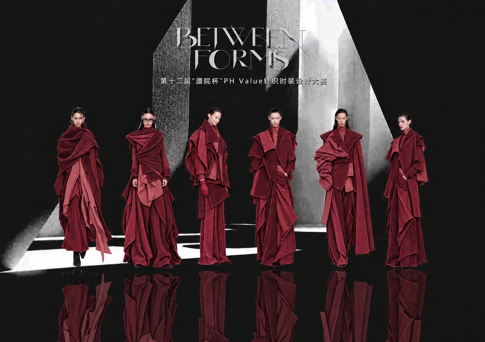
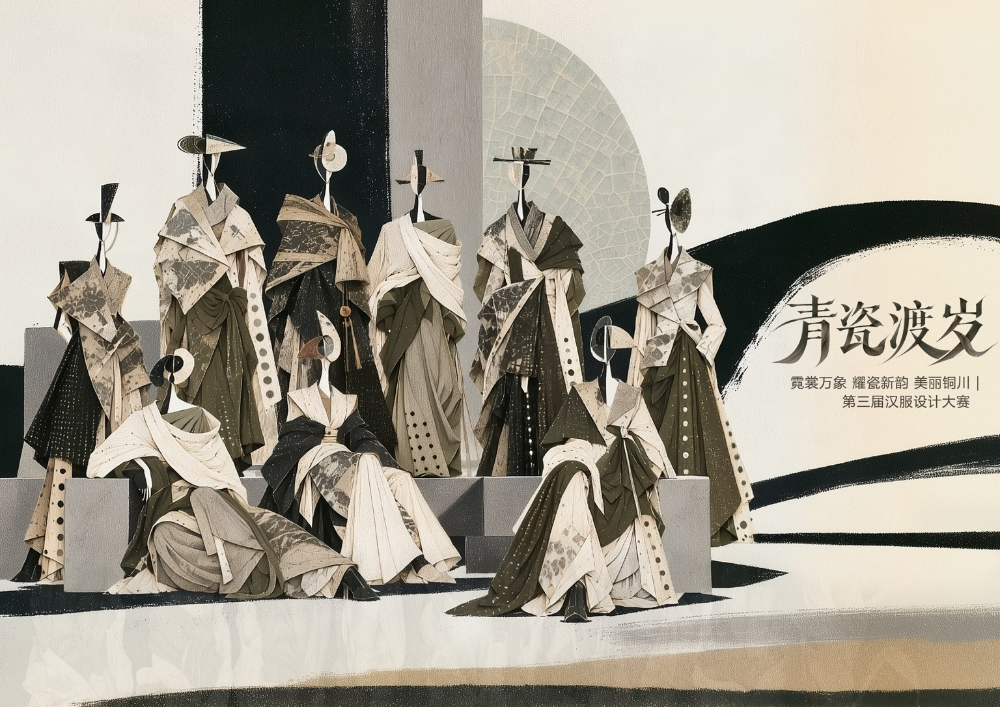
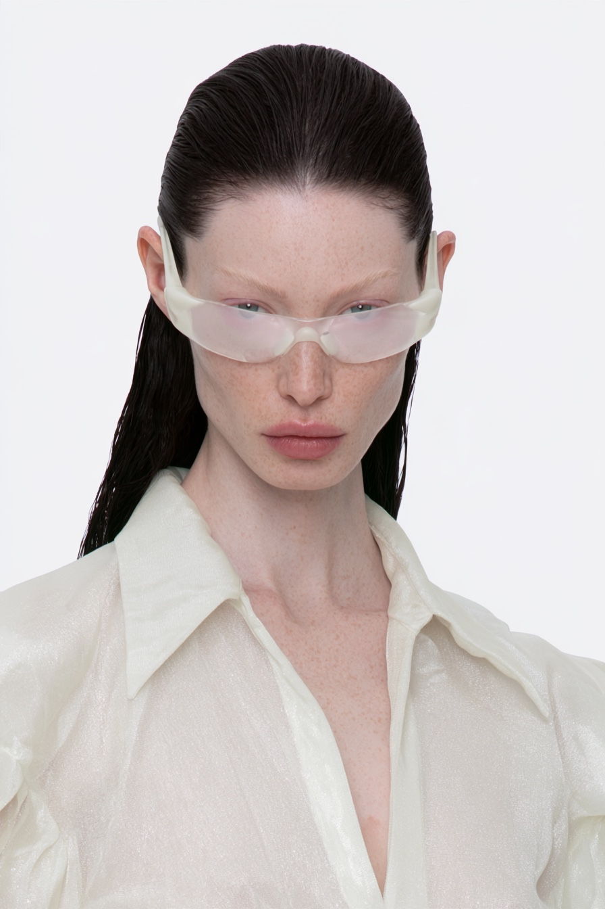
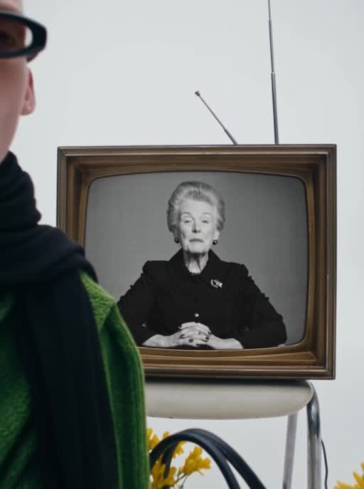
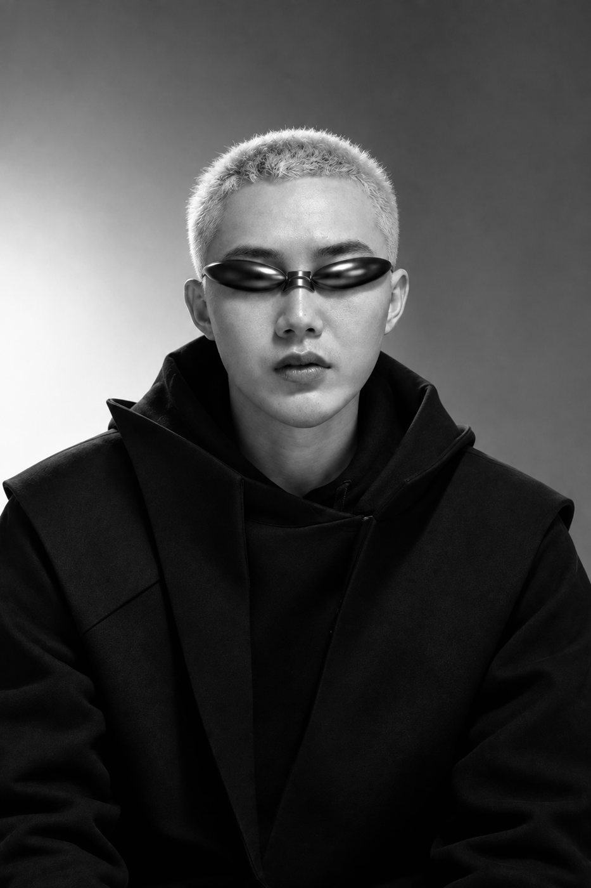

每月两期 · 腾讯会议
通过腾讯会议在线授课。每期6天，每晚19:00—21:30，每天2.5小时，共15小时。
系统化AI服装设计。
一套流程，贯通设计、影像与展示。
以AI独有创作技巧为核心，整合系列服装设计、AI时尚Campaign、动态影像与个人作品集网站，建立连贯的设计工作流程。
探索六天课程 ↘
以系列服装设计项目贯穿六天课程，将AI独有创作技巧应用于概念探索、参考图转化与系列开发，逐步完成效果图、款式图、AI时尚Campaign、动态影像及设计方案册，并衔接AI辅助打版、三维验证与作品集网站建设。
面向希望将AI融入设计实践的学习者与设计师，兼顾创意探索、服装结构表达与作品集呈现。
与以单一工具操作或图像生成为重点的课程相比，本课程围绕服装设计的完整工作流程展开，让每个环节都服务于最终作品。
结合讲师设计实践中积累的AI独有创作技巧，综合运用提示词构建、参考图引导、图像融合、拼贴、剪影与线稿转换等方法，围绕廓形、结构、面料及风格进行迭代，形成具有个人设计语言的系列作品。
| 学习维度 | 其他AI课程以单一工具操作或图像生成类课程为比较对象 | 本AI大师课程系统化AI服装设计 |
|---|---|---|
| 创作方法 | 侧重单一工具操作或图像生成方法 | 融合AI独有创作技巧与多种设计方法，支持系列服装开发 |
| 服装设计 | 完成单张图像的视觉表达 | 效果图、正背面款式图、可编辑文件、方案册与三维验证相互衔接 |
| 视觉呈现 | 围绕单一图像形式展开 | AI模特、AI时尚Campaign、场景光影与动态影像一体化制作 |
| 作品展示 | 输出图片或单项练习成果 | 整理完整作品集，搭建并发布个人作品集网站 |
比较范围：其他AI课程一栏指以单一工具操作或图像生成为重点的课程类型，不代表所有AI课程；具体内容以各课程实际安排为准。
以完整工作流程，系统衔接服装设计中的创意开发、设计表达与成果展示。
从方法到作品，每一天推进一个设计环节。
点击课程标题，展开学习内容。
AI工具应用与系列项目规划
提示词结构与服装设计表达
廓形、结构、面料、色彩与风格控制
提示词生成与参考图引导 · 灵感板（Mood Board）方法
AI服装效果图绘制与材质表现
PSD分层制作：线稿、底色、材质与阴影
图像融合法 · 拼贴法 · 剪影法 · 线稿转换法 · 五步法
系列款式开发 · 正背面结构与细节表达
AI辅助款式图绘制 · Illustrator矢量编辑与.ai文件整理
AI模特、场景与光影 · AI时尚Campaign与动态影像
主题阐述、灵感板、效果图、款式图与面料板整合
AI辅助方案册编排与系列视觉统一
结构分析与AI辅助纸样生成
CLO3D纸样导入、虚拟缝合、试穿与三维验证
个人作品集网站设计、搭建与发布
平台功能与操作流程 · 系列项目案例实践
设计细节与视觉效果优化
作品集、方案册与网站成果整理
以系列设计为主线，将工具操作与设计表达结合。
通过腾讯会议在线授课。每期6天，每晚19:00—21:30，每天2.5小时，共15小时。
课后可在一年有效期内回看课程，结合自己的创作进度，复习操作步骤与设计方法。
完成当期课程后，老生仍可持续跟课，在后续学习与实践中巩固方法、深化作品。
每月开设两期，具体开班日期请联系讲师咨询。
围绕六类学习成果，完善设计表达与作品集呈现，
形成可持续应用的创作方法。
整合效果图、款式图与时尚视觉成果。
PSD分层效果图与Illustrator矢量款式图。
系统呈现主题、系列、面料与设计细节。
建立个人线上展示与作品发布空间。
衔接系列开发、辅助打版与三维表现。
培养审美判断、系列统筹与竞赛方案呈现能力。
通过灵感板与面料板，呈现主题研究、视觉叙事与材质方向的组织方式。



以上为李德胜个人创作，展示课程相关的设计与视觉探索方向。

聚焦AI与时尚设计的融合，将服装设计、数字时装、AI模特与动态影像结合，探索从创意构想到作品呈现的多元表达。
创作与研究涵盖系列服装、实物秀场、数字艺术、学术研究及展览合作。
查看讲师作品与经历 ↗无论从学习、教学还是设计实践出发，都可以围绕自己的目标，连接AI创作与服装设计。
面向希望参加服装设计大赛，以及准备考研或留学作品集的设计专业学生。将AI用于主题研究、系列创作与设计表达，系统整理效果图、款式图和个人作品集。
希望了解AI服装设计的完整流程，将创作方法、案例实践与数字设计工具融入教学研究。
面向企业在职设计师及准备应聘企业设计岗位的设计师。将AI融入灵感探索、系列开发与设计提案，并整理适用于简历投递及面试展示的作品集。
希望建立从系列服装开发到品牌视觉传播的工作流程，创作AI时尚Campaign与动态影像，并搭建线上作品展示空间。
希望围绕服装开展AI模特塑造、场景与光影设计、AI时尚Campaign及动态影像创作，拓展时尚视觉表达。
具备AI图像生成实践经验，希望进一步掌握独有创作技巧，从单幅视觉探索进阶到完整的系列服装设计项目。
学员包括院校教师与学生、企业设计师及十佳设计师等群体，将AI创作方法应用于教学、学习与设计实践。
学员覆盖20多所知名院校师生
以上为部分学员所在院校。
点击查看原始海报与详细课表。
六天内容以本页详细课表为准。
每月两期 · 腾讯会议授课
回放有效期一年 · 老生可以持续跟课
咨询具体开班日期、学习准备与报名信息。